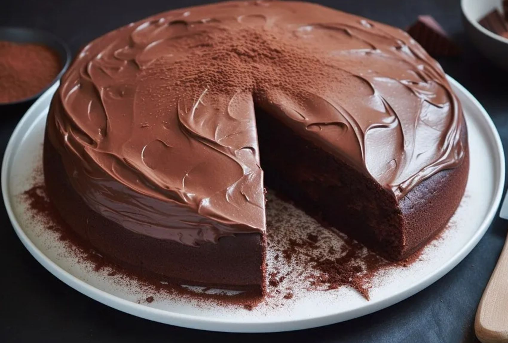

Chocolate Cake

Decadent Chocolate Cake: A Rich and Indulgent Dessert Delight
Chocolate cake or chocolate gâteau (from French: gâteau au chocolat) is a cake flavored with melted chocolate, cocoa powder, or both. Chocolate cake is made with chocolate. It can also include other ingredients. These include fudge, vanilla creme, and other sweeteners..
Ingredients needed:
- Flour
- Sugar
- Cocoa powder
- Baking powder
- Baking soda
- Salt
- Eggs
- Milk
- Vegetable oil
- Vanilla extract
- Boiling water
- Chocolate frosting
- Chocolate chips (optional, for garnish)
Instructions:
- Preheat oven to 350°F (175°C).
- Grease and flour cake pans.
- In a large bowl, mix dry ingredients.
- Add wet ingredients and mix until smooth.
- Stir in boiling water (batter will be thin).
- Pour batter into prepared pans.
- Bake for 30-35 minutes or until a toothpick inserted comes out clean.
- Cool in pans for 10 minutes; then remove from pans and cool completely.
- Frost with chocolate frosting and garnish with chocolate chips if desired.
- Slice and enjoy your decadent chocolate cake!